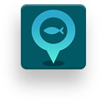
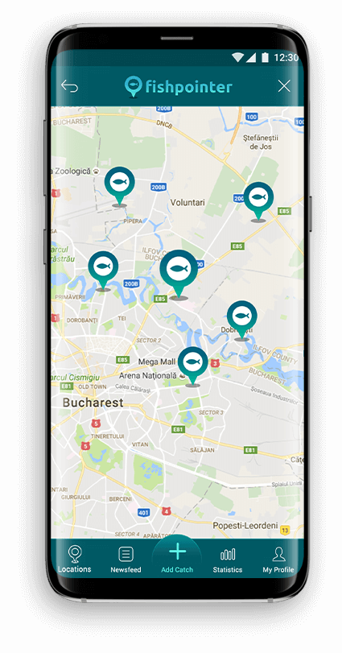
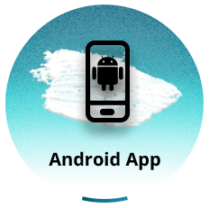
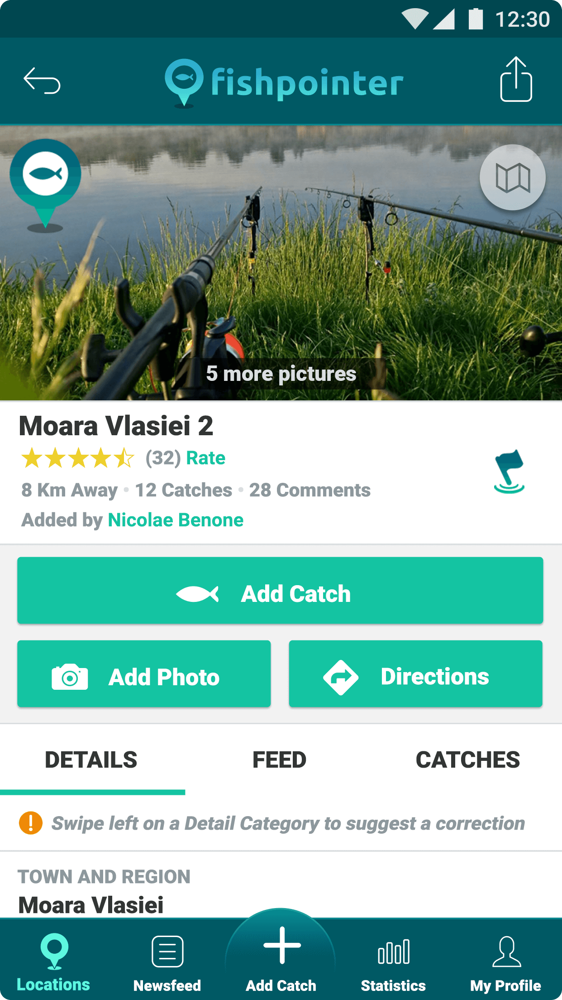
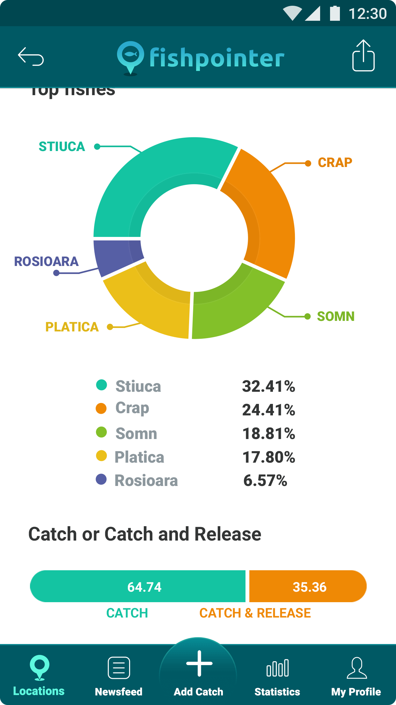
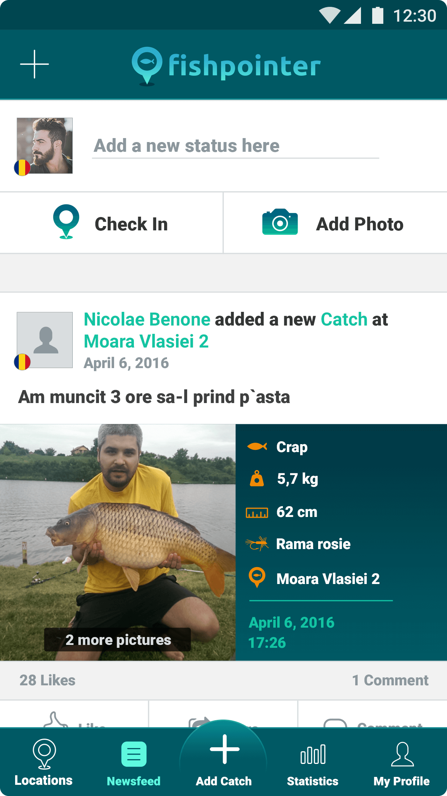
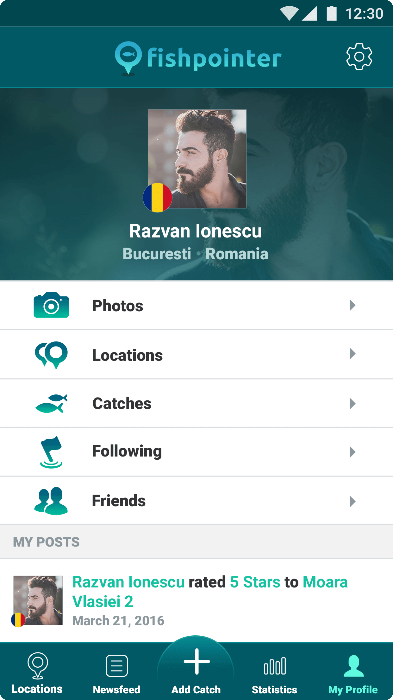
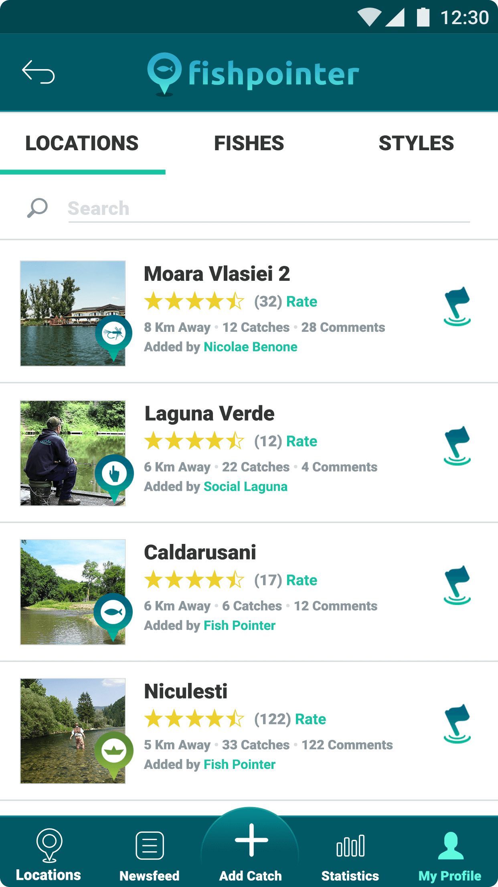

Fishpointer
Fishpointer is an ecosystem for facilitating social transactions across users in the fishing domain. The users are able to configure their fisherman profile and use the app to add and track all their catches and fishing locations. Fishpointer database contains a multitude of locations related to fishing, locations that will be visible for the mobile users. Fishpointer also offers social features where users can search and add their friends. The newsfeed of the app will display posts, created automatically (by certain actions in the app) and manually (users can create a new posts).


Client
George, co-founder of FishPointer (formerly MapPescar) arrived at Mobiversal through a recommendation from a friend of ours. They already had their startup launched (the web application) and wanted an Android app. The iOS app was planned to be developed internally. Fishpointer (formerly HartaPescar) is the most widely used fishing application in Romania and also an award-winning application at various international and national competitions.

Services
- 
Screens
drag to see more projects
- 
- 
- 
- 
- 
Challenges
Pal Levente,
Android developer
It was a pleasure working on the Fishpointer app, I really enjoyed it. I liked that it had all the API completed, Design and App flow. We also had a development server working with real data. It was my first Android app to use SQLite and GeoBox query to show POIs on the map. Of course each project has downsides, in this case there were a few details regarding Design & Functionality. The app having a very `iOS`-ish feeling, some things were more difficult to adapt on Android. After completing the app, I have showed the app to my friends who are passionate about fishing and they really liked it.

Testimonial
George Dragne,
CEO & Founder - Fishpointer
“Mobiversal delivers on time and on budget. Can't beat that! Mobiversal helps you build only the features you need. With no up-selling. They are great for building minimal viable products as well as full-blown apps. It's very easy to communicate with the Mobiversal team-- on the phone or via email. Settling on app requirements went very smoothly.”